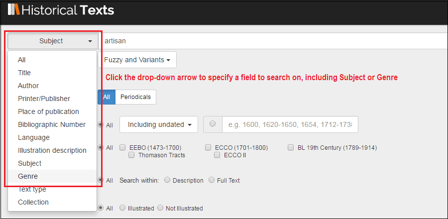
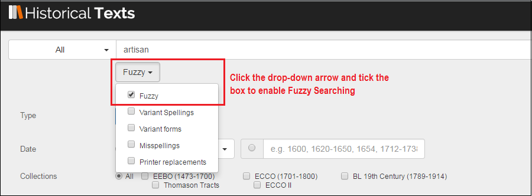

<div class="row">
    <div class="col-xs-12 topSpace">
        <div class="sideMenu">
            <div class="title">Support</div>
            <ul>
                <li><a href="">Support Home</a></li>
                <li><a href="/help/">Help File</a></li>
                <li><a href="/librarians/">Librarians</a></li>
                <li><a href="/faq/">FAQ</a></li>
				<li><a href="/quickref/">Quick Reference Guide</a></li>
				<li><a href="/features/">Features</a>
													 <ul>
            <li><a href="/astronomy">Astronomy</a></li>
            <li><a href="/blcovers">British Library Covers</a></li>
            <li><a href="/christmas">Christmas</a></li>
			<li><a href="/cookery">Cookery</a></li>
	     	<li><a href="/locallondon">Local History&#58; London</a></li>
			<li><a href="/maps">Maps</a></li>
			<li><a href="/music">Music</a></li>
            <li><a href="/shakespeare">Shakespeare</a></li>
            <li class="selected"><a href="/travel">Travel and Explorers</a></li>	
            <li><a href="/witchcraft">Witchcraft</a></li>
            </ul>
			</li>
			
            </ul>
        </div>

        <div class="support">

            <ol class="breadcrumb">

				    <li><a href="/features/">Features</a></li>
                    <li class="active">Travel and Explorers</a></li>

            </ol>


           <h1>Travel and Explorers</h1>

<p class="lead">Historical Texts holds a wealth of material about travel, and explorers. From memoirs of famous expeditions to holiday reminisces and advice on how to travel safely, covering all continents and corners of the globe, from the Arctic to Anglia. We provide direct links to the selected texts as well as tips on how to search further.</p>
	
		<br />
		

<h2>Famous Travellers</h2>
<p>Here we have three books about famous travelling explorers written by themselves - Charles Darwin, Captain James Cook and Sir John Mandeville.</p>
       
<div class=row> <div class="col-sm-6 col-md-3"> <div class=thumbnail>  <div class=caption> <h3>What Mr Darwin Saw</h3>
<p>Author&#58; Darwin, Charles</p> <p><span class="badge">BL</span></p><p><a href=https://data.historicaltexts.jisc.ac.uk/view?pubId=bl-000868098&index=bl&pageId=bl-000868098-985323-11 class="btn btn-primary" role=button>View text</a> </p> </div> </div> </div> 

<div class=row> <div class="col-sm-6 col-md-3"> <div class=thumbnail>  <div class=caption> <h3>A voyage to the Pacific Ocean&#59; undertaken by command of his Majesty, for making discoveries in the northern hemisphere&#58; performed under the direction of Captains Cook, Clerke, and Gore...</h3></p>
<p>Author&#58; Cook, James</p> <p><span class="badge">ECCO</span></p><p><a href=https://data.historicaltexts.jisc.ac.uk/view?pubId=ecco-0806600201&index=ecco&pageId=ecco-0806600201-1430 class="btn btn-primary" role=button>View text</a> </p> </div> </div> </div> 

<div class=row> <div class="col-sm-6 col-md-3"> <div class=thumbnail>  <div class=caption> <h3>The voyages & travels of Sir John Mandevile, Knight wherein is set down the way to the Holy Land, and to Hierusalem...</h3> <p>Author&#58; Mandeville, John Sir.</p> <p><span class="badge">EEBO</span></p><p><a href=https://historicaltexts.jisc.ac.uk/eebo-ocm12226365e class="btn btn-primary" role=button>View text</a> </p> </div> </div> </div>
  

</div></div></div>


 

<h2>Travel to the Arctic and Antarctic</h2>


<p>He we have several texts about exploration towards the Arctic and Antarctic regions, including &#34;Under The Northern Lights&#34; and &#34;Under the Rays of the Aurora Borealis&#34;, and the fictionalised account &#34;The Arctic Crusoe&#34;, as well as &#34;From Franklin to Nansen&#58; Tales of Arctic Adventure&#34;, &#34;Nimrod In the North&#34; and something from Captain Cook again...</p>

 <div class=row> <div class="col-sm-6 col-md-3"> <div class=thumbnail>  <div class=caption> <h3>The Arctic Crusoe&#58; a tale of the Polar Seas.</h3> <p>Author&#58; Saint John, Percy Bolingbroke</p><p><span class="badge">BL</span></p><p><a href=https://historicaltexts.jisc.ac.uk/bl-003226016 class="btn btn-primary" role=button>View text</a></p> </div> </div> </div> 
 
 <div class=row> <div class="col-sm-6 col-md-3"> <div class=thumbnail>  <div class=caption> <h3>Under the Rays of the Aurora Borealis&#58; in the land of the Lapps and Kvæns ...</h3> <p>Author&#58; Tromholt, Sophus</p><p><span class="badge">BL</span></p><p><a href=https://historicaltexts.jisc.ac.uk/bl-003678969-02 class="btn btn-primary" role=button>View text</a> </p> </div> </div> </div>
  
 <div class=row> <div class="col-sm-6 col-md-3"> <div class=thumbnail>  <div class=caption> <h3>Under the Northern Lights ... With illustrations by G. R. De Wilde</h3> <p>Author&#58; Macgahan, Januarius Aloysius</p> <p><span class="badge">BL</span></p><p><a href=https://data.historicaltexts.jisc.ac.uk/view?pubId=bl-002314226&index=bl&pageId=bl-002314226-1088895-8 class="btn btn-primary" role=button>View text</a> </p> </div> </div> </div> 
 </div></div></div>

 
  <div class=row> <div class="col-sm-6 col-md-3"> <div class=thumbnail>  <div class=caption> <h3>From Franklin to Nansen&#58; tales of Arctic Adventure ... With numerous illustrations.</h3> <p>Author&#58; Scott, G. Firth</p><p><span class="badge">BL</span></p><p><a href=https://historicaltexts.jisc.ac.uk/bl-003314675 class="btn btn-primary" role=button>View text</a></p> </div> </div> </div> 
 
 <div class=row> <div class="col-sm-6 col-md-3"> <div class=thumbnail>  <div class=caption> <h3>Nimrod in the North, or hunting and fishing adventures in the Arctic regions.</h3> <p>Author&#58; Schwatka, Frederick</p><p><span class="badge">BL</span></p><p><a href=https://historicaltexts.jisc.ac.uk/bl-003307071 class="btn btn-primary" role=button>View text</a> </p> </div> </div> </div>
  
 <div class=row> <div class="col-sm-6 col-md-3"> <div class=thumbnail>  <div class=caption> <h3>A voyage towards the South Pole, and round the world. Performed in His Majesty&#39;s ships the Resolution and Adventure...</h3> <p>Author&#58; Cook, James</p> <p><span class="badge">ECCO</span></p><p><a href=https://data.historicaltexts.jisc.ac.uk/view?pubId=eccoii-1390600701&index=eccoii&pageId=eccoii-1390600701-790 class="btn btn-primary" role=button>View text</a> </p> </div> </div> </div> 
 </div></div></div>
 
 

         
<h2>Travels in Western Europe</h2>
<p>Here we present some texts based around travel in the Western European nations &#45; &#34;The voyage of Italy&#34;, &#34;A journey through France, and part of Spain&#59; including many curious and interesting observations.&#34;, and &#34;Travels over England, Scotland and Wales...&#34;</p>
 
 <div class=row> <div class="col-sm-6 col-md-3"> <div class=thumbnail>  <div class=caption> <h3>The voyage of Italy, or, A compleat journey through Italy in two parts...</h3> <p>Author&#58; Lassels, Richard</p><p><span class="badge">EEBO</span></p><p><a href=https://historicaltexts.jisc.ac.uk/eebo-ocm12040167e class="btn btn-primary" role=button>View text</a> </p> </div> </div> </div> 
 
 <div class=row> <div class="col-sm-6 col-md-3"> <div class=thumbnail>  <div class=caption> <h3>A journey through France, and part of Spain&#59; including many curious and interesting observations</h3><p>Author&#58; Thicknesse, Philip</p> <p><span class="badge">ECCO</span></p><p><a href=https://historicaltexts.jisc.ac.uk/ecco-1019100201 class="btn btn-primary" role=button>View text</a> </p> </div> </div> </div>  
 
  <div class=row> <div class="col-sm-6 col-md-3"> <div class=thumbnail>  <div class=caption> <h3>Travels over England, Scotland and Wales. Giving a true and exact description of the chiefest cities, towns and corporations...</h3><p>Author&#58; Brome, James</p> <p><span class="badge">ECCO</span></p><p><a href=https://historicaltexts.jisc.ac.uk/eccoii-1458400400 class="btn btn-primary" role=button>View text</a> </p> </div> </div> </div> 
  
   </div></div></div>           

<h2>Tout le Monde&#33; Stories and Advice for travellers the world over.</h2>
<p>Our next set of publications for your pleasure include &#34;Among the Himalayas...&#34;, &#34;Twelve Times round the World&#34;, &#34;The travels of Monsieur de Thevenot into the Levant in three parts, viz. into I. Turkey, II. Persia, III. the East-Indies&#34;, &#34;A treatise of direction, how to travell safely and profitably into forraigne countries&#34; &#34;From Melbourne to Melrose.&#34; and &#34;A Transatlantic Holiday&#58; or, notes of a visit to the Eastern States of America.&#34;</p>
 
 <div class=row> <div class="col-sm-6 col-md-3"> <div class=thumbnail>  <div class=caption> <h3>Among the Himalayas ... With numerous illustrations by A. D. McCormick, the author, etc.</h3> <p>Author&#58; Waddell, Laurence Austine</p><p><span class="badge">BL</span></p><p><a href=https://historicaltexts.jisc.ac.uk/bl-003825150 class="btn btn-primary" role=button>View text</a> </p> </div> </div> </div> 
 
 <div class=row> <div class="col-sm-6 col-md-3"> <div class=thumbnail>  <div class=caption> <h3>Twelve Times round the World, etc</h3><p>Author&#58; Sayce, George Cross</p> <p><span class="badge">BL</span></p><p><a href=https://historicaltexts.jisc.ac.uk/bl-003263511 class="btn btn-primary" role=button>View text</a> </p> </div> </div> </div>  
 
  <div class=row> <div class="col-sm-6 col-md-3"> <div class=thumbnail>  <div class=caption> <h3>The travels of Monsieur de Thevenot into the Levant in three parts, viz. into I. Turkey, II. Persia, III. the East&#45;Indies</h3><p>Author&#58; Thévenot, Jean de</p> <p><span class="badge">EEBO</span></p><p><a href=https://historicaltexts.jisc.ac.uk/eebo-ocm11862647e class="btn btn-primary" role=button>View text</a> </p> </div> </div> </div> 
  
   </div></div></div>           

    <div class=row> <div class="col-sm-6 col-md-3"> <div class=thumbnail>  <div class=caption> <h3>A treatise of direction, how to travell safely and profitably into forraigne countries</h3> <p>Author&#58; Neale, Thomas</p><p><span class="badge">EEBO</span></p><p><a href=https://historicaltexts.jisc.ac.uk/eebo-ocm11951455e class="btn btn-primary" role=button>View text</a> </p> </div> </div> </div> 
 
 <div class=row> <div class="col-sm-6 col-md-3"> <div class=thumbnail>  <div class=caption> <h3>From Melbourne to Melrose.</h3><p>Author&#58; Smith, James of Melbourne</p> <p><span class="badge">BL</span></p><p><a href=https://historicaltexts.jisc.ac.uk/bl-003419002 class="btn btn-primary" role=button>View text</a> </p> </div> </div> </div>  
 
  <div class=row> <div class="col-sm-6 col-md-3"> <div class=thumbnail>  <div class=caption> <h3>A Transatlantic Holiday&#58; or, notes of a visit to the Eastern States of America.</h3><p>Author&#58; Fitz&#45;patrick, Thomas M.R.C.S.</p> <p><span class="badge">BL</span></p><p><a href=https://data.historicaltexts.jisc.ac.uk/view?pubId=bl-001247014&index=bl&pageId=bl-001247014-1023256-8 class="btn btn-primary" role=button>View text</a> </p> </div> </div> </div> 
  
   </div></div></div>           

   <h2>Different Collections &#45; different stories</h2>
<p>The final six publications are part of the UK Medical Heritage Library collection, which is open&#45;access and currently hosted on its <a href="https://ukmhl.historicaltexts.jisc.ac.uk/home">own platform</a>. Here we have publications on the anatomy of the native races of the Pacific, a British expedition to the Crimea, the Sea and its living wonders, and a French text on hygiene traits in the Navy....</p>
 
 <div class=row> <div class="col-sm-6 col-md-3"> <div class=thumbnail>  <div class=caption> <h3>The British expedition to the Crimea &#40;Volume 0001&#41;</h3> <p>Author&#58; Russell, William Howard.</p><p><span class="badge">UKMHL</span></p><p><a href=https://data.ukmhl.historicaltexts.jisc.ac.uk/view?pubId=ukmhl-b21308688_0001&index=ukmhl&pageId=ukmhl-b21308688_0001-49
 class="btn btn-primary" role=button>View text</a> </p> </div> </div> </div> 
 
 <div class=row> <div class="col-sm-6 col-md-3"> <div class=thumbnail>  <div class=caption> <h3>The sea and its living wonders</h3><p>Author&#58; Hartwig, G.</p> <p><span class="badge">UKMHL</span></p><p><a href=https://data.ukmhl.historicaltexts.jisc.ac.uk/view?pubId=ukmhl-b28083726&index=ukmhl&pageId=ukmhl-b28083726-98
 class="btn btn-primary" role=button>View text</a> </p> </div> </div> </div>  
 
  <div class=row> <div class="col-sm-6 col-md-3"> <div class=thumbnail>  <div class=caption> <h3>The Melanesians &#58; studies in their anthropology and folk&#45;lore</h3><p>Author&#58; n&#47;a</p> <p><span class="badge">UKMHL</span></p><p><a href=https://data.ukmhl.historicaltexts.jisc.ac.uk/view?pubId=ukmhl-b21936171&index=ukmhl&pageId=ukmhl-b21936171-104 class="btn btn-primary" role=button>View text</a> </p> </div> </div> </div> 
  
   </div></div></div>           

    <div class=row> <div class="col-sm-6 col-md-3"> <div class=thumbnail>  <div class=caption> <h3>The natural history of man &#58; being an account of the manners and customs of the uncivilized races of men &#40;Volume 2&#41;</h3> <p>Author&#58; n&#47;a</p><p><span class="badge">UKMHL</span></p><p><a href=https://data.ukmhl.historicaltexts.jisc.ac.uk/view?pubId=ukmhl-b21941129_0002&index=ukmhl&pageId=ukmhl-b21941129_0002-6
 class="btn btn-primary" role=button>View text</a> </p> </div> </div> </div> 
 
 <div class=row> <div class="col-sm-6 col-md-3"> <div class=thumbnail>  <div class=caption> <h3>Traite d'hygiene navale</h3><p>Author&#58; Fonssagrives, Jean Baptiste.</p> <p><span class="badge">UKMHL</span></p><p><a href=https://data.ukmhl.historicaltexts.jisc.ac.uk/view?pubId=ukmhl-b23982755&index=ukmhl&pageId=ukmhl-b23982755-214
 class="btn btn-primary" role=button>View text</a> </p> </div> </div> </div>  
 
  <div class=row> <div class="col-sm-6 col-md-3"> <div class=thumbnail>  <div class=caption> <h3>The native races of the Pacific Ocean</h3><p>Author&#58; Flower, William Henry</p> <p><span class="badge">UKMHL</span></p><p><a href=https://data.ukmhl.historicaltexts.jisc.ac.uk/view?pubId=ukmhl-b22349777&index=ukmhl&pageId=ukmhl-b22349777-11 class="btn btn-primary" role=button>View text</a> </p> </div> </div> </div> 
  
   </div></div></div>    
   
   
<h2>Search tips</h2>

<p>Users can perform a Subject search for travel directly from the Search box using the drop&#45;down arrow. &#34;Description and travel&#34; is a Subject, as is &#34;International travel regulations&#34;.
&#34;Non-fiction&#34; can be specified as a Genre, so these can be used to focus results onto more relevant material.
<br />
<br />
You can read more about the Subject and Genre classifications &#40;and how they vary between the collections in Historical Texts&#41; at our Help Page, here&#58; <a href=http://historicaltexts.jisc.ac.uk/help>http://historicaltexts.jisc.ac.uk/help</a>
</p>
<p>

<p/>
<p>
Fuzzy Searching can be used to mitigate for the variable quality of the machine&#45;generated OCR full text in the BL and ECCO collections &#45; but it is inadvisable to use this in conjunction with the Variant options as the results may be too broad or not of relevance.
</p>
<p>

<p/>


        
       
        </div>
        </div>
    </div>
	